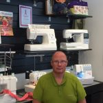

Varmt välkomna till sömnadens värld!
Eva Andersson

Henrik Andersson

mamma Elsie
Välkommen till butiken med skaparglädje sedan 1994.
Vi erbjuder symaskiner, overlock, cover och brodymaskiner från Husqvarna Viking, Janome, Bernina och Baby Lock.
Vi är återförsäljare av longarm-maskiner från Handi Quilter, Janome Quilt Maker Pro 20 och Janome Versa 18.
Här finns garner och tillbehör från Svarta Fåret och Sandnes Garn.
Vi har tyger för heminredning, trikåer, quilttyger och vadd till lappteknik.
På butikens övervåning finns två kurslokaler där kreativiteten flödar. Vi arrangerar sömnadskurser och syhelger.
I vår egen serviceverkstad jobbar Henrik. Med 30 års erfarenhet ger han snabb och professionell service på alla symaskinsmärken.
Eva Andersson
Henrik Andersson
mamma Elsie